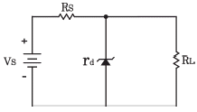
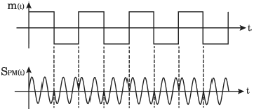
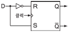
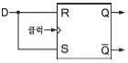
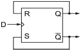
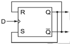
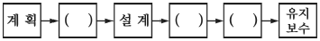
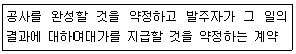

정보통신산업기사 (2018-04-28 기출문제)
1과목: 디지털전자회로
1. 전원 주파수가 60[Hz]인 정류회로에서 출력이 120[Hz]인 리플 주파수를 나타내는 회로방식은 무엇인가?
- 3상 반파정류회로
- 3상 전파정류회로
- 단상 반파정류회로
- 단상 전파정류회로
(정답률: 75%)

2. 다음 그림은 정전압 회로이다. 이 회로의 전압안정계수를 0.02로 하고자 하는데 필요한 저항 Fs의 값은? (단, 제너 다이오드 내부저항은 30[Ω]이고, 부하저항은 RL=∞로 한다.)

- 1.0[kΩ]
- 1.5[kΩ]
- 2.0[kΩ]
- 2.5[kΩ]
(정답률: 69%)
3. 다음 중 에미터 플로워(Emitter Follower)의 특징이 아닌 것은?
- 입출력임피던스가 대단히 높다.
- 부하저항이 변화해도 전류, 전압, 전력이득을 일정하게 유지할 수 있다.
- 전압이득이 1에 가깝다.
- 전류이득이 크다.
(정답률: 53%)
4. FET 증폭기에 있어서 Aυ=30, Cgd=1[pF], Cgs=10[pF]일 때의 등가 입력용량은 얼마인가?
- 27[pF]
- 41[pF]
- 48[pF]
- 84[pF]
(정답률: 71%)
5. 다음 중 부궤환 증폭기의 장점에 대한 설명으로 틀린 것은?
- 이득이 증가한다.
- 잡음이 감소한다.
- 비직선 일그러짐이 감소한다.
- 주파수특성이 개선된다.
(정답률: 63%)
6. 송신기의 완충증폭기(Buffer Amp)에 많이 쓰이는 증폭 방식은?
- A급
- B급
- C급
- AB급
(정답률: 68%)
7. 이상형 RC 발진기에서 궤환 네트워크(Feedback Network)의 입ㆍ출력 위상차는?
- 45°
- 90°
- 180°
- 360°
(정답률: 68%)
8. 다음 중 CR형 발진기에 대한 설명으로 틀린 것은?
- LC동조회로를 사용하지 않는다.
- 발진주파수는 CR의 시정수에 의해 정해진다.
- C와 R을 사용하여 부궤환에 의해 발진한다.
- 저주파 발진 파형이 깨끗하다.
(정답률: 67%)
9. 다음 중 PCM에서 미약한 신호는 진폭을 크게하고 진폭이 큰 신호는 진폭을 줄이는 기능을 무엇이라 하는가?
- 프리엠퍼시스(Pre-emphasis)
- 압신(Companding)
- 디엠퍼시스(De-emphasis)
- FM 복조시의 리미팅(Limitting)
(정답률: 75%)
10. 진폭변조에서 변조율 100[%]인 경우, 피변조파의 전력은 반송파 전력의 몇 배가 되는가? (단, Pm : 피변조파의 전력, Pc : 반송파의 전력)
- Pm=Pc
- Pm=2Pc
- Pm=(1/2)Pc
- Pm=(3/2)Pc
(정답률: 64%)
11. 다음의 파형은 디지털 변조 방식의 파형이다. 어느 방식의 파형인가?

- ASK
- FSK
- PSK
- QAM
(정답률: 65%)
12. 다음 중 PCM의 장점이 아닌 것은?
- 전송 구간에 잡음이 누적되지 않는다.
- 장거리 전송으로 고품질 통신이 가능하다.
- 전송로의 손실 변동 영향이 없다.
- 점유주파수 대역폭이 넓다.
(정답률: 61%)
13. 듀티싸이클(Duty Cycle)이 0.1이고, 주기가 40[μs] 인 경우 펄스폭은 몇 [μs] 인가?
- 10
- 4
- 3
- 1
(정답률: 82%)
14. 쌍안정 멀티바이브레이터 회로에서 저항에 병렬로 접속된 콘덴서의 주요 목적은?
- 증폭도를 높이기 위해
- 스위칭 속도를 높이기 위해
- 베이스 전위를 일정하게 하기 위해
- 이미터 전위를 일정하게 하기 위해
(정답률: 72%)
15. 10진수 673을 16진수로 변환하면 얼마인가?
- 2B1
- 2A1
- 291
- 2C1
(정답률: 73%)
16. 3초과 코드 0111의 10진수 값과 그레이 코드(Gray Code) 0111의 10진수 값을 각각 나열한 것은?
- 4,5
- 5,6
- 6,7
- 7,8
(정답률: 76%)
17. 다음 중 GAL(Generic Array Logic)과 PAL(Programmable Array Logic)에 대한설명으로 옳은 것은?
- GAL은 재프로그램이 가능하나 PAL은 그렇지 않다.
- PAL은 재프로그램이 가능하다 GAL은 그렇지 않다.
- GAL과 PAL은 모두 재프로그램이 가능하다.
- GAL과 PAL은 모두 상호 연결을 위해 링크를 사용한다.
(정답률: 59%)
18. 2진 4단 리플 카운터는 몇 개의 펄스를 계수할 수 있는가?
- 4개
- 8개
- 16개
- 32개
(정답률: 78%)
19. 다음 중 RS 플립플롭으로 구현된 D 플립플롭 회로는?




(정답률: 68%)
20. 3개의 입력 A, B, C 중 2개 이상이 1일 때 출력 Y가 1이 되는 다수결 회로의 논리식으로 맞는 것은?
- Y = AB + BC + AC
- Y = A × B × C
- Y = ABC
- Y = A + B + C
(정답률: 81%)
2과목: 정보통신기기
21. 다음 중 통신제어장치(CCU)의 설명으로 틀린 것은?
- 다수의 통신회선과의 사이에 데이터의 송수신을 수행하고, 전송속도와 컴퓨터의 처리 속도의 차이를 보완한다.
- 주변장치를 제어하며, 기억장치와의 데이터 전송을 수행하는 장치이다.
- 통신회선과의 전기적 인터페이스, 통신회선의 접속 및 절단 제어 등의 기능이 있다.
- 데이터의 처리에 따라 비트 버퍼 방식, 문자 버퍼 방식, 블록 버퍼방식, 메시지 버퍼 방식 등으로 구분된다.
(정답률: 50%)
22. 정보 단말기 중 회선 접속부의 기능이 아닌 것은?
- 병렬 Data를 직렬로 변환 기능
- 2진 비트열로 변환 기능
- 직렬 Data를 병렬로 변환 기능
- 전송제어문자나 부호의 식별 기능
(정답률: 72%)
23. 다음 중 정보통신시스템의 구성 분류에서 정보 전송시스템에 해당되지 않는 것은?
- 통신회선
- 변복조장치
- 통신제어장치
- 중앙처리장치
(정답률: 69%)
24. 공중전화망을 통하여 디지털데이터 전송이 가능할 수 있도록 하는 전송장치는?
- FET
- DSU
- CODEC
- MODEM
(정답률: 56%)
25. 컴퓨터가 터미널에게 전송할 데이터가 있는지를 묻는 것을 무엇이라 하는가?
- 링크
- 폴링
- 셀렉션
- 어드레싱
(정답률: 77%)
26. 디지털 데이터를 디지털 전송 회선에 적합하도록 변형하여 원거리에 설치된 컴퓨터나 단말 장치에 전송하는 장비는?
- MODEM
- DSU
- CODEC
- MPEG
(정답률: 68%)
27. 4위상 PSK 변ㆍ복조기에서 변조속도가 2,400[baud]일 때 데이터 전송속도는?
- 9,600[bps]
- 4,800[bps]
- 2,400[bps]
- 1,200[bps]
(정답률: 77%)
28. 다음 중 주파수분할다중화(FDM)기의 설명이 아닌 것은?
- 동기식 데이터 다중화에 사용된다.
- 1,200[bps]이하에서 사용된다.
- 채널간 완충지역으로 가드밴드(Guard Band)를 주어야 한다.
- 별도의 모뎀이 필요 없다.
(정답률: 56%)
29. 다음 중 광가입자망의 가입자별로 하나의 파장을 대응시켜 고속전송이 가능한 방식은?
- FDM 방식
- TDM 방식
- SDM 방식
- WDM 방식
(정답률: 73%)
30. 다음 중 전화기 회로의 기본 구성이 아닌 것은?
- 통화 회로
- 신호 회로
- 가입자 교환회로
- 측음 방지회로
(정답률: 72%)
31. 통신망 신호방식 중 다이얼 방식에서 메이크시간 = 2, 브레이크 시간 = 4일 때, 단속비는 얼마인가?
- 0.5
- 1
- 2
- 3
(정답률: 78%)
32. 원거리에 있는 사람들끼리 서로의 얼굴이나 영상을 보면서 회의 및 통화를 할 수 있도록 만든 시스템을 무엇이라 하는가?
- 무선통신
- 위성통신
- 이동통신
- 화상통신
(정답률: 89%)
33. 다음 중 CATV에 대한 설명으로 옳지 않은 것은?
- 안테나로 수신한 TV신호를 동축케이블 등의 광대역 전송로로 전송한다.
- 난시청 해소를 위한 TV방송의 재송신 및 자체프로그램 방송을 서비스한다.
- CATV는 도시형 CATV, 양방향 CATV 등이 있다.
- CATV의 간선에는 FTTH(Fiber To The Home)가 적용된다.
(정답률: 69%)
34. IEEE 802.11로 표준화된 WLAN 규격 중 가장 빠른 속도를 지원하는 것은 어느 것인가?
- IEEE 802.11a
- IEEE 802.11b
- IEEE 802.11g
- IEEE 802.11n
(정답률: 76%)
35. 이동통신기기의 근거리 무선통신방식 중 전송거리 10[cm] 이내에서 쓰기/읽기가 가능한 통신방식은?
- WAN
- Wifi
- NFC
- WLAN
(정답률: 84%)
36. 다음 중 WPAN(Wireless Personal Area Network) 방식이 아닌 것은?
- 블루투스
- UWB
- Zigbee
- 위성통신
(정답률: 69%)
37. 일반적으로 텔레비전 수상기와 전용키보드를 단말로 하고 이들 단말과 화상ㆍ음성 파일장치를 가진 센터 사이를 광대역 전송로로 개별적으로 접속하여 이용자 요구에 따라 정보를 개별적으로 제공해 주는 시스템은?
- 텔리텍스트
- VRS(Video Response System)
- 화상전화시스템
- CRS(Computer Reservation System)
(정답률: 68%)
38. 음성신호를 패킷 데이터로 변환하여 인터넷 망에서 전화 서비스를 제공하는 것은?
- WiBro
- Telematics
- WCDMA
- VolP
(정답률: 82%)
39. 광통신시스템에 사용되는 광소자 중 능동형인 것은?
- 커플러
- 분배기
- 광증폭기
- 편광조절기
(정답률: 65%)
40. 정보 가전이 네트워크로 연결되어 기기, 시간, 장소에 구애 받지 않고 다양한 서비스를 제공하는 통신 서비스는?
- WiBro
- DMB
- DTV
- Home Network
(정답률: 80%)
3과목: 정보전송개론
41. PCM방식에서 입력신호의 최대신호가 2[kHz]인 경우, 나이퀴스트(Nyquist) 표본화 주파수(fs)와 표본화 주기(Ts)의 계산값은?
- fs=2[kHz], Ts=500[μs]
- fs=4[kHz], Ts=250[μs]
- fs=6[kHz], Ts=167[μs]
- fs=8[kHz], Ts=125[μs]
(정답률: 80%)
42. 표본화 주파수가 10[kHz]이고 원신호 파형의 주파수가 1[kHz]라면, 1주기당 PAM신호는 몇 개인가?
- 1개
- 2개
- 5개
- 10개
(정답률: 78%)
43. 사람의 목소리를 PCM방식으로 디지털화하고자 한다. 음성 전달 대역폭을 0 ~ 4,000[Hz]로 정의할 경우, 샤논의 표본화 정리에 의한 표본화율(Sampling Rate)은 얼마인가?
- 4,000[표본수/초]
- 6,000[표본수/초]
- 7,000[표본수/초]
- 8,000[표본수/초]
(정답률: 72%)
44. 입력 신호에 따라 반송파의 진폭과 위상을 동시에 변조하는 변조방식은?
- QAM
- PSK
- ASK
- FSK
(정답률: 83%)
45. UTP Category 5 케이블을 이용하여 100[Mbps] 속도를 지원하도록 구성하기 위해 사용되는 UTP 케이블의 페어(pair)수는?
- 1
- 2
- 3
- 4
(정답률: 68%)
46. 광케이블을 CO(Central Office)에서 가입자 댁내까지 연결하여 안정된 인터넷 서비스 제공하는 방식은?
- FTTF
- FTTH
- FTTO
- FTTC
(정답률: 82%)
47. 광섬유에서의 신호원은 무엇인가?
- 빛
- 무선파
- 단파
- 초단파
(정답률: 86%)
48. 현재 우리나라 FM 방송에 사용되는 주파수대는?
- 중파 : 0.3 ~ 3[MHz]
- 단파 : 3 ~ 30[MHz]
- 초단파 ; 30 ~ 300[MHz]
- 극초단파 : 0.3 ~ 3[MHz]
(정답률: 74%)
49. 한 번에 한 문자씩 전송하며, Start bit와 Stop bit를 두어 문자와 문자를 구분하는 데이터 전송 방식은?
- 직렬 전송 방식
- 병렬 전송 방식
- 비동기식 전송 방식
- 동기식 전송 방식
(정답률: 74%)
50. 다음 중 공통선 신호방식(Common Channel Signaling)의 특징이 아닌 것은?
- 통화채널과 분리된 별도의 신호채널을 통해 신호가 송수신 된다.
- 축적 프로그램 제어 방식에 의해 신속한 상호 전달 능력과 망의 상태관리나 보수 과금 정보 전송도 수행할 수 있다.
- 신호망의 일부 손상이 통신망의 마비를 초래할 수 있다.
- 신호전송의 전기적 조건에 따라서 직류방식, In-Band 방식 등으로 나눈다.
(정답률: 66%)
51. 다음 중 기저대역전송에서 전송부호가 가져야 하는 조건으로 적합하지 않은 것은?
- 전송대역폭이 압축되어야 한다.
- DC 성분이 포함되어야 한다.
- 동기정보가 충분히 포함되어야 한다.
- 에러의 검출이 용이하다.
(정답률: 58%)
52. 디지털 정보통신시스템이 9,600[bps]로 동작하여야 할 경우 신호요소가 4[bit]로 인코드 된다면 이상적인 전송채널의 최소 대역폭은?
- 1,200[Hz]
- 2,400[Hz]
- 4,800[Hz]
- 9,600[Hz]
(정답률: 82%)
53. OSI 프로토콜 구조 중에서 데이터링크계층이 하는 역할이 아닌 것은?
- 흐름제어
- 데이터 동기 제공
- 에러의 검출 및 정정
- 네트워크 어드레싱
(정답률: 70%)
54. OSI 계층에서 통신망 연결에 필요한 데이터 교환 기능의 제공 및 관리를 규정하는 계층으로서 네트워크 연결관리, 경로 설정 등의 기능을 수행하는 계층은?
- 데이터링크 계층
- 네트워크 계층
- 전송 계층
- 세션 계층
(정답률: 79%)
55. OSI 7계층 참조모델 중 제4계층에 해당되는 것은?
- 응용계층
- 전송계층
- 표현계층
- 물리계층
(정답률: 84%)
56. 한 건물 안이나 제한된 지역 내에서 컴퓨터 및 주변장치 등을 연결하여 정보와 프로그램을 공유할 수 있도록 해주는 네트워크를 무엇이라 하는가?
- LAN
- MAN
- WAN
- PON
(정답률: 83%)
57. Class 단위 IP주소 지정 방법의 문제점을 개선한 기술이 아닌 것은?
- DNS
- IPv6
- NAT
- 서브네팅(Subnetting)
(정답률: 61%)
58. 다음 중 라우팅 테이블에 포함되어 있지 않은 정보는?
- 송신지 IP address
- 목적지 네트워크 주소
- 다음 홉(hop) IP address
- 로컬 인터페이스
(정답률: 65%)
59. 입력되는 정보 마지막에 1[bit]를 추가하여 추가된 Bit로 에러를 검사하는 것을 무엇이라고 하는가?
- ASCII
- Parity Check
- CRC
- ARQ
(정답률: 82%)
60. 두 부호어의 비트열이 A=(100100), B=(010100)일 때 두부호어의 해밍 거리는 얼마인가?
- 1
- 2
- 3
- 4
(정답률: 73%)
4과목: 전자계산기일반 및 정보설비기준
61. 다음 중 두 개의 입력을 받아서 합과 자리올림을 구하는 조합 논리회로는?
- 인코더
- 디코더
- 반가산기
- 멀티플렉서
(정답률: 74%)
62. 다음 중 ROM과 RAM의 차이점을 설명한 것으로 틀린 것은?
- RAM은 휘발성 메모리라고 한다.
- EPROM은 한 번 쓰면 지울 수 없다.
- RAM은 동적 RAM과 정적 RAM으로 나눌 수 있다.
- ROM의 종류에는 EPROM, EEPROM, PROM 등이 있다.
(정답률: 81%)
63. 검색 방법 중에서 키 값으로부터 레코드가 저장되어 있는 주소를 직접 계산하여 산출된 주소로 바로 접근하는 방법으로 키-주소 변환방법이라고도 하는 것은?
- 이진 검색
- 피보나치 기술
- 해싱 방법
- 블록 검색
(정답률: 72%)
64. 다음 중 자료의 단위에서 File의 개념을 표현한 것으로 가장 올바른 것은?
- Record의 집합을 의미한다.
- Character의 수를 의미한다.
- Code의 집합을 의미한다.
- Field의 집합을 의미한다.
(정답률: 64%)
65. 다음은 운영체제 중에서 처리를 요구하는 자료가 발생할 때마다 즉시 처리하는 방식은?
- 오프라인 시스템
- 분산처리 시스템
- 실시간 처리 시스템
- 일괄처리 시스템
(정답률: 84%)
66. 다음 중 운영체제의 기법에 관한 걸명으로 틀린 것은?
- 분산처리 시스템은 데이터를 여러 컴퓨터로 분산해서 사용하는 것을 말한다.
- 데이터베이스는 상호 연관 있는 데이터들의 집합과 처리를 말한다.
- 다중 프로레싱이란 여러 CPU를 같이 사용하는 것을 말한다.
- UNIX는 단일 사용자 환경을 제공한다.
(정답률: 72%)
67. 다음은 소프트웨어 시스템개발 모형이다. 빈칸에 들어갈 내용을 바르게 나열한 것은?

- 요구분석, Test, 구현
- 요구분석, 구현, Test
- Test, 요구분석, 구현
- 구현, Test, 요구분석
(정답률: 58%)
68. 다음 중 C 언어의 변수에 대한 설명으로 틀린 것은?
- 변수는 값을 저장하는 기억장소의 주소, 길이, 타입의 세 가지 속성을 지닌다.
- 변수 이름은 영어 알파벳 문자나 밑줄 문자(_)로 시작해야 한다.
- 변수 이름의 영문 대문자와 소문자는 서로 구별되지 않는다.
- C 언어의 키워드는 변수 이름으로 사용될 수 없다.
(정답률: 82%)
69. 다음 중 마이크로컨트롤러에 대한 설명으로 틀린 것은?
- CPU와 RAM, ROM, I/O를 하나의 칩에 구현하였으며, MCU라고도 한다.
- 종류로는 CISC와 RISC가 있다.
- 임베디드 시스템에 널리 사용되고 있다.
- 연산부와 제어부로 구성되어 있으며, CPU 또는 MPU라고도 한다.
(정답률: 60%)
70. CPU 대신하여 I/O 장치와 Memory 사이의 데이터 전송을 담당하는 장치로써 CPU의 개입 없이 주변 장치와 주기억 장치와의 데이터 전송이 이루어지는 기법은?
- Interrupt Driven I/O
- Program Driven I/O
- DMA(Direct Memory Access
- Polling
(정답률: 73%)
71. 과학기술정보통신부장관이 전기통신의 원활한 발전과 정보사회의 촉진을 위하여 수립하는'전기통신기본계획'에 포함되는 사항이 아닌 것은?
- 전기통신의 질서유지에 관한 사항
- 전기통신의 이용효율에 관한 사항
- 전기통신기술의 진흥에 관한 사항
- 국가정보화와 관련된 국제협력의 활성화에 관한 사항
(정답률: 68%)
72. 자기 또는 타인에게 이익을 주거나 타인에게 손해를 가할 목적으로 전기통신설비에 의하여 공연히 허위의 통신을 한 자에 대한 벌칙으로 옳은 것은?
- 1년 이하의 징역 또는 1천만원 이하의 벌금
- 3년 이하의 징역 또는 3천만원 이하의 벌금
- 5년 이하의 징역 또는 5천만원 이하의 벌금
- 10년 이하의 징역 또는 1억원 이하의 벌금
(정답률: 75%)
73. 다음 중 전기통신설비의 용어에 대한 정의로 가장 옳은 것은?
- 전기통신을 하기 위한 기계ㆍ기구ㆍ선로 기타 전기통신에 필요한 설비를 말한다.
- 전기통신을 행하기 위한 통신로 구성설비로서 전송ㆍ선로설비를 말한다.
- 전기통신사업에 제공하기 위한 통신 및 교환기를 말한다.
- 통신설비에 사용하는 장치ㆍ기기ㆍ부품 또는 선조 등을 말한다.
(정답률: 62%)
74. 전기통신의 전송이 이루어지는 유형 또는 무형의 계통적 전기통신로를 무엇이라 하는가?
- 통신선
- 접지선
- 회선
- 전선
(정답률: 75%)
75. 다음 중 방송통신서비스를 안정적으로 제공하기 위하여 방송통신설비의 관리규정을 정하여야하는 방송통신사업자가 아닌 것은?
- 위성방송사업자
- 지상파방송사업자
- 종합유선 방송사업자
- 중계유선방송사업자
(정답률: 60%)
76. 지능형 홈네트워크 설비에서 세대망과 단지망을 상호 접속하는 장치는?
- 단지서버
- 세대단자함
- 월패드
- 홈게이트웨이
(정답률: 71%)
77. 다음 문장은 무엇에 대한 정의인가?

- 수급
- 도급
- 용역
- 시공
(정답률: 63%)
78. 다음 중 정보통신설비의 설치 및 유지, 보수에 관한 공사의 범위에 속하지 않는 것은?
- 전기통신 관계법령 및 전기설비 공사업에 의한 전기설비공사
- 방송법 및 방송관계법령에 의한 방송설비공사
- 수전설비를 제외한 정보통신전용 전기시설설비공사
- 정보통신설비를 이용하여 정보를 제어, 저장 및 처리하는 정보설비공사
(정답률: 47%)
79. 용역업자는 발주자에게 정보통신공사에 대한 감리결과를 공사가 완료된 날부터 며칠 이내에 통보하여야 하는가?
- 3일
- 5일
- 7일
- 10일
(정답률: 78%)
80. 다음 중 보편적 역무의 내용에 해당하지 않는 것은?
- 도서통신용 유선전화 서비스
- 긴급통신용 선박 무선전화 서비스
- 인터넷유지보수를 위한 전화 서비스
- 장애인ㆍ저소득층에 대한 요금감면 전화 서비스
(정답률: 67%)